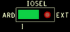

Turbidity Measurement Demo
An important water quality indicator for almost any use is the presence of dispersed, suspended solids—particles not in true solution (often including silt, clay, algae, other microorganisms, organic matter, and other minute particles). Turbidity is a qualitative characteristic imparted by how these suspended solids obstruct the transmittance of light. Turbidity is not a direct measure of suspended particles in water but rather a measure of the scattering effect such particles have on light.
General Description
The EVAL-CN0503-ARDZ is a four-channel optical platform capable of fluorescence, absorbance and scattering measurements. The two middle channels/light paths are only capable of absorbance and 180-degree scattering measurements. This demo uses one of the side paths for 90- and 180-degree scattering measurements.
Turbidity measurements follow design standards requiring specific types of light sources and number and angle of detectors. One of the standards is ISO7027 Water Quality - Determination of Turbidity which requires a monochromatic light source usually an IR LED, and a primary detector at a 90-degree angle. The demo will follow the standard using a single 940nm LED and two detectors at 90- and 180-degree angles. The unit for turbidity under the standard is FTU and the CN0503 computes this using 2 linear approximations (for low and high turbidity measurements) obtained from a 3-point calibration.
Demo Requirements
The following is a list of items needed in order to replicate this demo.
CN0503, completely assembled (see Hardware User Guide)
EVAL-ADICUP3029 with firmware (see Software User Guide)
Host computer with CN0503 software (see
Quick Setup Guide) and Microsoft Excel (Optional for computing the parameters of the linear approximation)Test solutions (common household liquids, such as milk, mixed with water or cement slurry water)
Assembling the 940nm LED
The default options for the LED sources do not include infrared wavelength. Spare Lumiled and Lite-on LED boards are available for users to mount custom LEDs. The demo uses the Lumiled Luxeon IR Compact Series 940nm LED.
Setting the EVAL-CN0503-ARDZ
Before starting with these steps, please check the Hardware User
Guide for the steps to assembling the CN0503.
Additionally, please check the Software User Guide for
the steps in setting up the firmware and the
Quick Setup Guide for running
the software. This demo assumes that you already have an assembled board with a
working firmware already programmed on the EVAL-ADICUP3029 and a
ready-to-run software in the host computer.
Configure the on-board jumper shunt connection as below:
Jumper Header |
Setting |
Image |
|---|---|---|
LD4SEL |
Set to VARD |
|
IOSEL |
Set to ARD |
 |
P1.8V |
Shorted |

|
Important
You can use either path 1 or 4 for turbidity measurements. The steps outlined here will use path 4, and setting LED4, P4ASEL, and P4BSEL.
Connect the 940nm LED Board to LED4.
Remove the fluorescent filter, if present, from the slot shown below:
Set the jumper headers P4ASEL and P4BSEL as instructed in the table below:
Jumper Header |
Setting |
Image |
|---|---|---|
P4ASEL |
Set to 0DEG |
|
P4BSEL |
Set to 90DEG |
Initial Connection and Setup
Connect the EVAL-ADICUP3029 to the CN0503 and connect a microUSB-to-USB cable from the board to the host computer.
Run the software using python scripts or the executable, see the
Quick Setup Guideand wait for the main window to open.
Click the Gear icon at the top right of the window to open Settings.

Select the correct COM Port of the device and click the
Connectbutton (seeQuick Setup Guidefor help).Load the configuration file for pH Measurement:
cn0503_defaults_turbidity.zipConfigure the settings for path 4 with the desired name, set wavelength to 940nm, and select measurement type: turbidity.
Add empty an cuvette (or filled with distilled water) to the cuvette holder assembly and insert to path 4. Click
Optimize LEDfor path 4. This properly sets the LED current in these paths so that the light intensity is close to 50%.Remove the cuvette and click
Okayto return to the Main Window.
{kind=link}
Linear Approximation using 3-Point Calibration
Turbidity measurement is sensitive to multiple factors including ambient light and particulate contamination of samples. A pseudo-three-point calibration routine allows for high precision turbidity measurements.
Fill three different cuvettes with the 20, 100, and 800 FTU calibration solutions up to the level marking as shown below.
Go to the main window of the application and set the optical path to RRAT and the click on
Start Measurement.Note the average value of the RRAT measured from the samples and stop measurement.
20 FTU
100 FTU
800 FTU
Two linear equations can be computed from the three turbidity (FTU) and average RRAT data points using the slope formula and point-slope form.
You can also use this Excel file
turbidity_calibration.xlsxwhich plots the calibration points and generates a linear equation from a trendline.
Important
You can include more calibration points in the Excel table for both high and low turbidity ranges.
To use the linear approximation, go to the Settings Window then, the Advanced Settings Window. In the command field, enter the coefficients of the linear approximation following the syntax: DEF3 INS1 <x-intercept> <slope>
Important
You can only use one linear approximation at a time using INS1. Select the measurement range best fitted for the liquid sample. You can also start with using the low turbidity range first before switching to the high turbidity measurement when the measured value is greater than 100 FTU.
Performing a Turbidity Measurement
Set the INS1 polynomial to the linear approximation for either low or high turbidity measurement. If you are unsure of the turbidity range of the sample, choose the low turbidity range and check if the measurement is greater than 100 FTU. If it is, set the INS polynomial to the linear approximation for high turbidity measurements.
Place a prepared cuvette with the test sample to either path 4. The liquid sample should reach up to the marking as detailed in the Linear Approximation using 3-Point Calibration section.
Go back to the Main Window by clicking
Okayon both the Advanced Settings and Settings. Select path 4 and, set display mode to INS1, and pressStart Measurement.
Important
Optionally, you can set the unit displayed in the plot to FTU
by writing this in the primary unit field of path 4 found by clicking the
Advanced button in the Settings window.